わくわくが全身に出る猫 [梅吉]
春は鬢付け油の香りとともに [梅吉]
気温は上がったり下がったりしていますが日差しは確実に春の暖かさ。
家の中に差し込む陽の角度も変わってきて
日向ぼっこが長く楽しめるようになった梅吉さん。
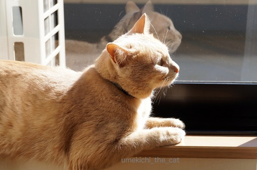
![[猫]](https://blog.ss-blog.jp/_images_e/101.gif) ええかんじや〜
ええかんじや〜
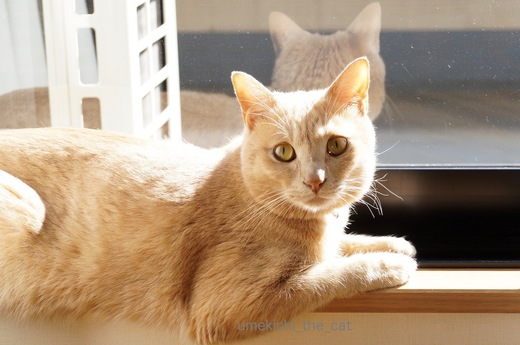
窓ガラスに映った横顔と、まあるい後頭部が二重丸ですよー![[黒ハート]](https://blog.ss-blog.jp/_images_e/136.gif)
ワインセットを入手したらうち一本がロゼワインでした。
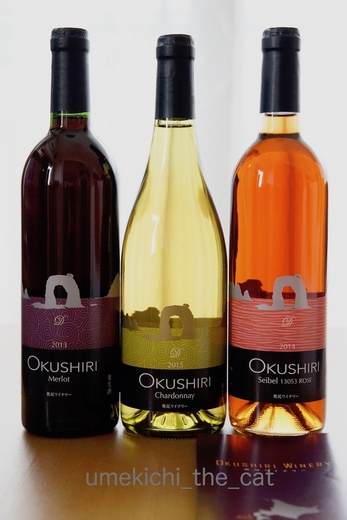
北海道の奥尻町、奥尻ワイナリーで作ったワイン。
奥尻は渡島半島（函館がある半島です）の日本海側に浮かぶ島でーす。
ここは海がキレイでウニが美味しくて・・・って行ったことないのですが。
北海道に住んでいるうちに一度行ってみたかったな〜。
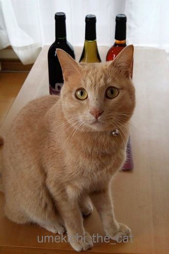
などど考えているとやっぱり参加してくる梅吉さんでした。
数える程した飲んだことがないロゼワインなので比較できませんが
軽そうでいてしっかり味があってなかなか美味しかったです。
 ↑ガブッと一押し↑
↑ガブッと一押し↑
家の中に差し込む陽の角度も変わってきて
日向ぼっこが長く楽しめるようになった梅吉さん。
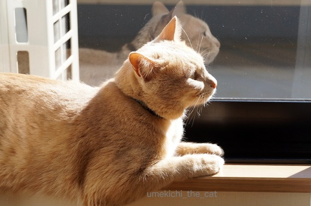
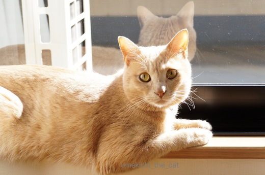
窓ガラスに映った横顔と、まあるい後頭部が二重丸ですよー
ワインセットを入手したらうち一本がロゼワインでした。
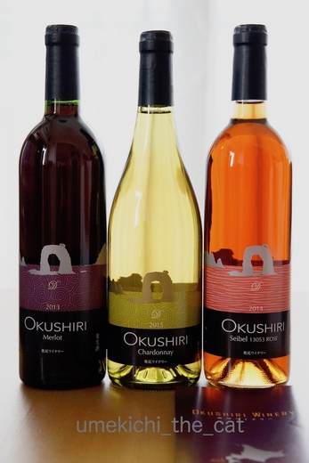
北海道の奥尻町、奥尻ワイナリーで作ったワイン。
奥尻は渡島半島（函館がある半島です）の日本海側に浮かぶ島でーす。
ここは海がキレイでウニが美味しくて・・・って行ったことないのですが。
北海道に住んでいるうちに一度行ってみたかったな〜。
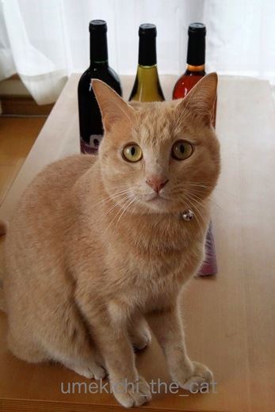
などど考えているとやっぱり参加してくる梅吉さんでした。
数える程した飲んだことがないロゼワインなので比較できませんが
軽そうでいてしっかり味があってなかなか美味しかったです。
我が家の「２２」行事 [梅吉]
梅吉の拳とロカボダイエット [梅吉]
２個目のおもちゃが届きました。

やっぱり食い付きが違います。おかーさんはうれしいですよ。
梅吉さんは興奮して・・・・・

立ち上がる！

立ち上がる！！

立ちっぱなしです！！！

あたたたたたたたたたーーーーーっ！
出ました梅吉拳です！
もう羽が二枚も取れちゃいました。
瞬殺は免れたけれど時間の問題みたいです。
↑ガブッと一押し↑

やっぱり食い付きが違います。おかーさんはうれしいですよ。
梅吉さんは興奮して・・・・・

立ち上がる！

立ち上がる！！

立ちっぱなしです！！！

出ました梅吉拳です！
もう羽が二枚も取れちゃいました。
瞬殺は免れたけれど時間の問題みたいです。
鹿寄せに行ってきました [備忘録]
相変わらずブラシが嫌いな梅吉さん。

ブラシをしている間ずっと文句を言いつづけ・・・

ブラシをしていない間も文句を言いつづけ・・・

やめんかいっ![[むかっ（怒り）]](https://blog.ss-blog.jp/_images_e/152.gif)
ほんの短い時間なのにねー。そんなに怒らなくてもいいじゃない。
でもそろそろ換毛期。怒られてもブラシはしますよ！
そんな怒りん坊の梅吉さんに留守番を頼んで奈良にお出かけ。

ブラシをしている間ずっと文句を言いつづけ・・・

ブラシをしていない間も文句を言いつづけ・・・

ほんの短い時間なのにねー。そんなに怒らなくてもいいじゃない。
でもそろそろ換毛期。怒られてもブラシはしますよ！
そんな怒りん坊の梅吉さんに留守番を頼んで奈良にお出かけ。
ジャラシの運命 [梅吉]
先日購入した梅吉さんのおもちゃ。
釣り竿みたいな棒の先にこれまた擬似餌みたいなおもちゃがついていました。
（擬似餌、面白い画像ないかな〜とググって気が遠くなりました。
虫、にょろにょろ系が嫌いな方はやめましょう(꒦ິ⌑꒦ີ)）
このジャラシを振り回すとそれは大層な喜びようで・・・
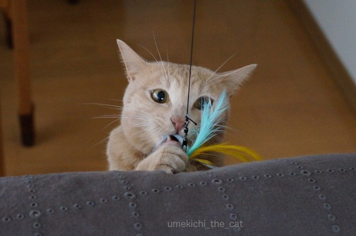
真剣すぎて目が寄り目になってます。笑
こんなにお気に入りだったジャラシ、壊れちゃいました・・・
先端についている羽とヒモが根元からそっくり抜けた。
買ってから２週間、短命だったな〜。
あ、製品の質を云々言っているわけではないのですよ。
梅吉みたいにハードに遊んだらあっという間に壊れるとは思っていたのです。
先端についているジャラシは替えが売っているのですが
その前に我が家得意の家にあるもの利用でリメイク。
スズランテープでポンポンみたいのを作ってつけてみました。
さあ！どうよ！！梅吉さん！！！
・・・わし・・・みずのんどこ。
わ〜なんですかそのつれない態度。
遊ぶことは遊ぶのですが「なんかこれじゃない」感がひしひしと伝わってきます。
そんなものふりまわしておかーさんはつまらんひとになったなぁ・・・・
わ〜![[もうやだ～（悲しい顔）]](https://blog.ss-blog.jp/_images_e/143.gif) ひどいじゃないですか〜
ひどいじゃないですか〜
しょうがないのでとりあえずひとつぽちっと買うことにしました。300円なり。
壊れるたびに買ってゆくのもね・・・
と思い100 均で使えそうな素材を探してこようと思っています。
最近の100 均の手芸コーナーって結構な品揃えなんですよ。
あとは買った素材をいかにうまくまとめて耐久性を持たせるか・・・だわ。
↑ガブッと一押し↑
釣り竿みたいな棒の先にこれまた擬似餌みたいなおもちゃがついていました。
（擬似餌、面白い画像ないかな〜とググって気が遠くなりました。
虫、にょろにょろ系が嫌いな方はやめましょう(꒦ິ⌑꒦ີ)）
このジャラシを振り回すとそれは大層な喜びようで・・・
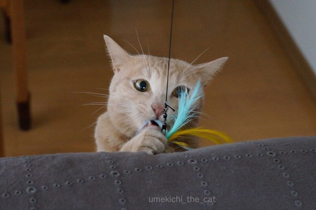
真剣すぎて目が寄り目になってます。笑
こんなにお気に入りだったジャラシ、壊れちゃいました・・・
先端についている羽とヒモが根元からそっくり抜けた。
買ってから２週間、短命だったな〜。
あ、製品の質を云々言っているわけではないのですよ。
梅吉みたいにハードに遊んだらあっという間に壊れるとは思っていたのです。
先端についているジャラシは替えが売っているのですが
その前に我が家得意の家にあるもの利用でリメイク。
スズランテープでポンポンみたいのを作ってつけてみました。
さあ！どうよ！！梅吉さん！！！
わ〜なんですかそのつれない態度。
遊ぶことは遊ぶのですが「なんかこれじゃない」感がひしひしと伝わってきます。
わ〜
しょうがないのでとりあえずひとつぽちっと買うことにしました。300円なり。
壊れるたびに買ってゆくのもね・・・
と思い100 均で使えそうな素材を探してこようと思っています。
最近の100 均の手芸コーナーって結構な品揃えなんですよ。
あとは買った素材をいかにうまくまとめて耐久性を持たせるか・・・だわ。
梅吉さんへのプレゼント [梅吉]
バレンタインの日も平常心の梅吉さん。
平常心どころか寝ぼけていませんか？

いつもどおりのあさねのねぼけがおやで。
おかーさんも職場や仕事関係の人に義理チョコを渡すなんて無毛なイベントは賛成しないけど
自分や家族間で楽しむなら良いじゃない？
それに普段は買えないようなお高いチョコレートが大手を振って買えるのよ〜。
なので、行ってきま〜すε=ε=ε=ε=ε=ε=ヾ(*ΦωΦ)ﾉ

デパートの特設会場のチョコレート売り場は子供からおばあちゃんでにぎわう「女子の巣」。
女性が自分用に買うことを想定してかゴージャズなパッケージや
ラブリーなデザインのチョコレートが目立ちましたよ。
で、手に入れたのがこちら。
焼酎ボンボンです！。for おっと。
おもてに貼ってあるシールがチョコレートの中に入っている焼酎の銘柄です。
「アサヒ」なんて九州以外ではあまり見かけない焼酎なのでは？
色々みてたら自分用のも欲しくなってきて・・・・
（最初からそのつもりだったのでは？というご意見はスルーです。笑）
わーい！パッケージ買い！！
グリーンの箱のにゃんこのうつろな目が
お風呂でふぬけになっている梅吉そっくりで買わずにはいられませんでした。
箱が空いたら梅吉のヒゲを入れるんだ〜。
このほかにも猫パッケージたくさんありました。
猫人気、チョコレートの世界にまで進出ですね。
梅吉さんには食べ物ではなく愛を込めてじゃらしを思い切り振り回してさしあげました。

がぶ〜っ。
獲物を捕まえたおとこの顔です。笑

走り疲れて、休憩したいをアピール中。
皆さんへのお返事＆ご訪問ちょっと遅れています。ごめんなさい(꒦ິ⌑꒦ີ)
猫じゃない疑惑深まる [梅吉]

お風呂タイム [梅吉]
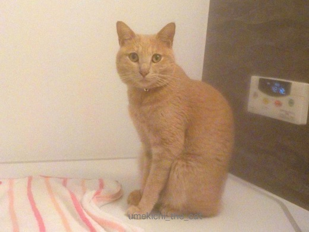
湯気がもうもうと立ち込めるバスルームからお伝えします。
（お風呂用の防水カメラ、画質が悪いな〜。）
梅吉さんはお風呂でお顔を拭いてもらって１日の疲れを癒します。
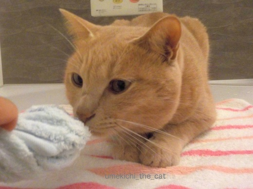
「お顔、拭く？」と聞くと顔をにゅ〜っとのばしてきて

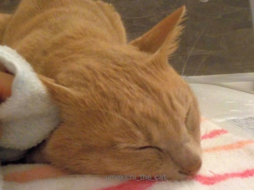
お風呂だとお耳の中もいやがりません。

はいはい。のどのまわりも拭きましょうねー。

目がとろんとしてきましたよ。
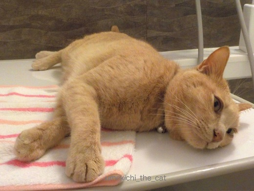
気持ちよすぎてごろん。
このスキにお尻の辺りを拭こうとすると・・・

いたいです・・・・(꒦ິ⌑꒦ີ)

はい、最後のひと暴れでお顔に変な癖のついた梅吉さんの出来上がり！
明日も一緒にお風呂に入りましょうね。でもかじらんといてね。
おかーさんの日課 [梅吉]
梅吉さんの日課があるならおかーさんの日課もあるわけで・・・

そんなところに居座っていると

こんなことがしたくなるんですよ。うりうり〜

まいあさおなじことやめてんか。
ひつっこいわ〜ほんまに・・・・

ぎーーーーーっ
ああ、良いお顔ですよ(≧▽≦)
この顔を見ないと１日が始まらないかも。
このほか薬用リップクリームのニオイを嗅いで嫌な顔をするのもルーチンです。笑
今朝はその表情を撮る気満々だったのにしてくれませんでした・・・・
思い通りには行かない猫様。
こちらは期待通りに順調です。大きなリバウンドもなくただいま4550ｇ。
あと50〜100ｇは許容範囲かな。このままキープしたいです。
↑ガブッと一押し↑

そんなところに居座っていると

こんなことがしたくなるんですよ。うりうり〜


ああ、良いお顔ですよ(≧▽≦)
この顔を見ないと１日が始まらないかも。
このほか薬用リップクリームのニオイを嗅いで嫌な顔をするのもルーチンです。笑
今朝はその表情を撮る気満々だったのにしてくれませんでした・・・・
思い通りには行かない猫様。
こちらは期待通りに順調です。大きなリバウンドもなくただいま4550ｇ。
あと50〜100ｇは許容範囲かな。このままキープしたいです。

カフェオレ色の梅吉

梅吉 2023年8月10日 永眠


梅吉と出会った譲渡会

犬猫の理由なき殺処分ゼロ
妄想広告
UMEKICHI 光

爆発的に早い！
時々攻撃的！
Thanks to Mr.Boss365
爆発的に早い！
時々攻撃的！
Thanks to Mr.Boss365